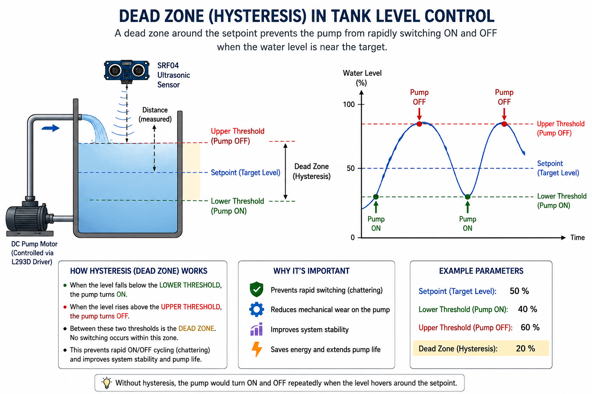

Project 08 — Water Tank Level Control: Ultrasonic Sensor & DC Motor¶
1. What Are We Building?¶
We will build an automatic water tank level controller — the same type of system used in building water towers, irrigation tanks, and industrial reservoirs.
An SRF04 ultrasonic sensor measures the distance from the top of the tank to the water surface. From this, Arduino calculates the current water level. A DC motor (pump) — controlled through an L293D motor driver — is turned on when the level is too low and turned off when it reaches the target level.
The key engineering feature is hysteresis control: a small "dead zone" around the target level that prevents the pump from rapidly switching on and off (chattering) when the water surface is near the setpoint — exactly the same technique used in real industrial level controllers.
2. What Will You Learn?¶
By the end of this project you will be able to:
- Explain how an ultrasonic distance sensor works using the speed of sound
- Use
pulseIn()to measure the width of a pulse in microseconds - Use
delayMicroseconds()for precise, sub-millisecond timing - Understand what an H-bridge motor driver (L293D) is and why it is needed
- Control a DC motor's speed (PWM via
analogWrite()) and direction (IN1/IN2 pins) - Explain hysteresis (dead-band control) and why it is essential in real systems
- Use
constrain()to clamp sensor readings to a valid physical range - Understand the difference between on/off (bang-bang) control and a future step toward proportional (PID) control
3. Components Needed¶
| Quantity | Component | Notes |
|---|---|---|
| 1 | Arduino Uno | Any compatible clone |
| 1 | SRF04 Ultrasonic Distance Sensor | 4-pin: VCC, GND, TRIG, ECHO |
| 1 | L293D Motor Driver IC | DIP-16 package; mounts on breadboard |
| 1 | DC Motor | Represents the water pump |
| 1 | External power supply (6–12 V) | Powers the motor through L293D |
| 1 | Breadboard | Full-size recommended for L293D |
| Several | Jumper wires | |
| 1 | USB cable |
SRF04 vs HC-SR04 — What Is the Difference?¶
Both sensors work on the same principle and use the same code. Common differences:
| Feature | SRF04 | HC-SR04 |
|---|---|---|
| Manufacturer | Devantech (UK) | Various (China) |
| Supply voltage | 5V | 5V |
| Trigger pulse | 10 µs HIGH | 10 µs HIGH |
| Echo output | 5V logic | 5V logic |
| Range | 3 cm – 3 m | 2 cm – 4 m |
| Connector | 4-pin header | 4-pin header |
Caution
The code is identical for both sensors. Pin names (TRIG, ECHO) are the same.
4. Key Concepts¶
4.1 How Ultrasonic Distance Sensing Works¶
The SRF04 measures distance using the speed of sound, the same way bats navigate.

Step-by-step:
1. Arduino pulls TRIG HIGH for 10 µs → sensor emits a burst of 8 ultrasonic pulses at 40 kHz
2. Sensor pulls ECHO HIGH
3. Ultrasonic pulses travel through air, hit the water surface, and reflect back
4. When the echo returns, sensor pulls ECHO LOW
5. Arduino measures how long ECHO was HIGH (using pulseIn)
6. Distance = (time × speed of sound) / 2
The division by 2 is because the sound travels to the surface and back — the round-trip distance is twice the actual distance.
Speed of sound in air at room temperature: approximately 343 m/s = 0.0343 cm/µs
4.2 pulseIn() — Measuring Pulse Duration¶
pulseIn(pin, state) waits for a pulse to start on a pin, measures how long it
lasts, and returns the duration in microseconds (µs):
| Parameter | Meaning |
|---|---|
pin |
Which pin to listen on |
HIGH |
Wait for the pin to go HIGH, then measure until it goes LOW |
| Return value | Duration in microseconds (µs) as a long |
Note
Why long and not int?
An
inton Arduino holds values up to ~32,767. A 3-meter echo takes ~17,500 µs — already close to the limit.longholds up to ~2,147,000,000, making it safe for any realistic distance. Always uselongforpulseIn()results.
4.3 delayMicroseconds() — Sub-Millisecond Timing¶
The trigger pulse for the SRF04 must be exactly 10 microseconds — far too short
for delay(), which works in milliseconds (1 ms = 1000 µs).
| Function | Resolution | Minimum | Use For |
|---|---|---|---|
delay(ms) |
1 ms = 1000 µs | 1 ms | General pauses |
delayMicroseconds(µs) |
1 µs | 1 µs | Sensor trigger pulses, precise timing |
4.4 The L293D H-Bridge Motor Driver¶
A DC motor needs much more current than an Arduino pin can supply (up to ~1 A vs. a pin's 40 mA limit). Connecting a motor directly to an Arduino pin would permanently damage the pin or the chip.
An H-bridge is a circuit that: 1. Provides current amplification — takes a small Arduino signal and drives a much larger current to the motor 2. Allows direction reversal — by controlling which way current flows
The L293D is one of the most common H-bridge ICs. It can drive two motors simultaneously and includes built-in protection diodes to handle the voltage spikes motors produce when switching.
L293D Pin Functions (for one motor channel)¶
| L293D Pin | Name | Connect To |
|---|---|---|
| 1 | Enable 1 (ENA) | Arduino PWM pin (e.g., pin 3) |
| 2 | Input 1 (IN1) | Arduino digital pin (e.g., pin 4) |
| 7 | Input 2 (IN2) | Arduino digital pin (e.g., pin 5) |
| 3 | Output 1 (OUT1) | Motor terminal A |
| 6 | Output 2 (OUT2) | Motor terminal B |
| 8 | VS (Motor Power) | External power supply (+) |
| 4, 5 | GND | Common GND |
| 16 | VSS (Logic Power) | Arduino 5V |
Motor Control Truth Table¶
| ENA | IN1 | IN2 | Motor Behavior |
|---|---|---|---|
| HIGH | HIGH | LOW | Spins forward |
| HIGH | LOW | HIGH | Spins backward |
| HIGH | LOW | LOW | Brakes (stops quickly) |
| HIGH | HIGH | HIGH | Brakes (stops quickly) |
| LOW | any | any | Coasts (free spins) |
| PWM (0–255) | HIGH | LOW | Forward at variable speed |
Important
ENA with analogWrite(): Since ENA accepts PWM, you can control motor
speed by writing a value from 0 (stopped) to 255 (full speed), just like
controlling LED brightness — but driving a motor instead.
4.5 PWM and analogWrite() for Speed Control¶
analogWrite(pin, value) outputs a PWM (Pulse Width Modulation) signal:
a rapid on/off square wave where the fraction of time spent HIGH determines the
effective average voltage delivered.
value = 0 → 0% duty cycle → 0 V average → motor stopped
value = 127 → 50% duty cycle → 2.5 V average → half speed
value = 200 → 78% duty cycle → ~4 V average → ~78% speed
value = 255 → 100% duty cycle → 5 V average → full speed
The motor's speed is (approximately) proportional to the average voltage it receives. This lets us run the pump at a reduced speed if needed, rather than always at full power.
4.6 Water Level Calculation¶
The sensor mounts at the top of the tank, pointing downward at the water surface. It measures the distance to the water surface, not the water level itself.
Tank top (sensor mounted here)
│
│ ← distance (what sensor measures)
│
┄┄┄┄ ← water surface
│
│ ← water level (what we want)
│
└─── Tank bottom
The conversion:
constrain(value, min, max) clamps the result:
- If the sensor reads a noise spike giving distance > tankHeight, waterLevel
would go negative — constrain fixes it to 0
- If the sensor reads 0 (object too close), waterLevel = tankHeight — constrain
caps it at the tank height
4.7 Hysteresis — Why Bang-Bang Controllers Need a Dead Zone¶
Without hysteresis, a simple on/off controller would behave like this:
level < target → pump ON → level rises
level = target → pump OFF → level drops slightly
level < target → pump ON → level rises again
(repeats thousands of times per second)
This rapid switching (called chattering) causes: - Electrical noise in the circuit - Mechanical wear on the motor and pump - Premature component failure
Hysteresis adds a dead zone (band) around the target:
level < (target − hysteresis) → pump ON (level is too low)
level > (target + hysteresis) → pump OFF (level is high enough)
otherwise → no change (stay in current state)
With targetLevel = 150.0 cm and hysteresis = 2.0 cm:
- Pump turns ON when level drops below 148 cm
- Pump turns OFF when level rises above 152 cm
- Between 148–152 cm, the pump holds its last state — no switching
This is also called bang-bang control with hysteresis in control engineering. It is the simplest form of closed-loop automatic control — the same principle used in thermostats, refrigerators, and industrial tank controllers.
4.8 Library-Based Approaches — NewPing and SRF04¶
In Versions 1 and 2, we handle all sensor communication manually: toggling TRIG,
calling pulseIn(), and converting duration to centimeters ourselves. This teaches
the underlying physics clearly — but in real projects, dedicated libraries handle
all of this in a single function call, making code shorter and less error-prone.
Two popular libraries for ultrasonic sensors are:
NewPing (a.k.a. "Ping" library)¶
Author: Tim Eckel
Install: Library Manager → search NewPing
NewPing supports a wide range of ultrasonic sensors (HC-SR04, SRF04, SRF05, etc.) and adds useful features the manual approach lacks:
| Feature | Manual (pulseIn) |
NewPing |
|---|---|---|
| Timeout handling | pulseIn blocks until echo or timeout |
Built-in; returns 0 if out of range |
| Median filter | Must implement yourself | ping_median(n) — takes n readings, returns median |
| Distance unit | Must calculate: duration × 0.034 / 2 |
ping_cm() returns cm directly |
| Non-blocking mode | Not available | ping_timer() with interrupt callback |
#include <NewPing.h>
NewPing sonar(TRIG_PIN, ECHO_PIN, MAX_DISTANCE);
float distance = sonar.ping_cm(); // single reading in cm (0 = no echo / out of range)
float median = sonar.ping_median(5); // 5-reading median in µs — divide by 57 for cm
SRF04 Library¶
Author: Garfield Lee
Install: Library Manager → search SRF04
This library is written specifically for Devantech SRF-series sensors (SRF04, SRF05). Its API is even simpler than NewPing — a single object and a single method:
#include <SRF04.h>
SRF04 srf(TRIG_PIN, ECHO_PIN);
float distance = srf.getDistance(); // returns distance in cm
The library internally handles the trigger pulse and pulseIn() call, but does
not include median filtering or non-blocking modes. It is ideal when you want the
minimum possible code for a Devantech sensor.
Which Should You Use?¶
| Situation | Recommended |
|---|---|
| Learning — understanding the sensor physics | Manual (pulseIn) — Versions 1 & 2 |
| Fast prototyping with any ultrasonic sensor | NewPing — Version 3 |
| Simple project with SRF04 specifically | SRF04 library — Version 4 |
| Noisy environment, need averaging | NewPing (ping_median()) |
| Non-blocking / interrupt-driven systems | NewPing (ping_timer()) |
5. Hardware Setup¶
Pin Connections¶
| Component | Arduino Pin | Notes |
|---|---|---|
| SRF04 TRIG | 9 | Digital output |
| SRF04 ECHO | 10 | Digital input |
| SRF04 VCC | 5V | |
| SRF04 GND | GND | |
| L293D ENA (pin 1) | 3 | PWM output — controls motor speed |
| L293D IN1 (pin 2) | 4 | Direction control |
| L293D IN2 (pin 7) | 5 | Direction control |
| L293D VSS (pin 16) | 5V | Logic power |
| L293D VS (pin 8) | External supply (+) | Motor power (not Arduino 5V!) |
| L293D GND (pins 4, 5) | GND (common) | |
| Motor A | L293D OUT1 (pin 3) | |
| Motor B | L293D OUT2 (pin 6) |
Wiring Diagram (Text)¶
Arduino SRF04
──────── ──────────
Pin 9 ─────────────── TRIG
Pin 10 ─────────────── ECHO
5V ─────────────── VCC
GND ─────────────── GND
Arduino L293D (DIP-16)
──────── ──────────────────
Pin 3 ─────────────── Pin 1 (ENA) ← PWM speed
Pin 4 ─────────────── Pin 2 (IN1) ← direction
Pin 5 ─────────────── Pin 7 (IN2) ← direction
5V ─────────────── Pin 16 (VSS) ← logic power
GND ──┬────────────── Pin 4,5 (GND)
│
External supply (–) ──── GND (common)
External supply (+) ──── Pin 8 (VS) ← motor power
L293D DC Motor
────────── ──────────
Pin 3 (OUT1) ─────────── Terminal A
Pin 6 (OUT2) ─────────── Terminal B
L293D on the Breadboard¶
The L293D is a 16-pin DIP IC. Mount it straddling the center channel of the breadboard so the two rows of pins land on opposite sides — this is the correct way to mount any DIP IC and gives you access to all pins.
┌────────────────┐
Pin 1 │ENA VCC│ Pin 16
Pin 2 │IN1 IN4│ Pin 15
Pin 3 │OUT1 OUT4│ Pin 14
Pin 4 │GND IN3│ Pin 13
Pin 5 │GND OUT3│ Pin 12
Pin 6 │OUT2 GND│ Pin 11
Pin 7 │IN2 GND│ Pin 10
Pin 8 │VS ENA│ Pin 9
└────────────────┘
(top view, notch at top)
Note
We only use the left channel (pins 1–8) for one motor.
Pins 9–16 control a second motor and can be left unconnected.
What is Hysteresis?¶

6. The Code¶
Version 1 — Hysteresis Control (Production-Ready)¶
// ── Pin Definitions ──────────────────────────────────────────
const int TRIG_PIN = 9;
const int ECHO_PIN = 10;
const int ENABLE_PIN = 3; // Must be a PWM pin (~)
const int IN1_PIN = 4;
const int IN2_PIN = 5;
// ── Tank Parameters ───────────────────────────────────────────
const float TANK_HEIGHT = 300.0; // cm — height of tank (simulated: 30 cm scale to 300 cm)
const float TARGET_LEVEL = 150.0; // cm — desired water level (50% full)
const float HYSTERESIS = 2.0; // cm — dead zone half-width
const int MOTOR_SPEED = 200; // PWM value 0–255 for pump speed
// ── State variable ─────────────────────────────────────────────
bool motorState = false; // false = OFF, true = ON
// ─────────────────────────────────────────────────────────────
void setup() {
Serial.begin(9600);
pinMode(TRIG_PIN, OUTPUT);
pinMode(ECHO_PIN, INPUT);
pinMode(ENABLE_PIN, OUTPUT);
pinMode(IN1_PIN, OUTPUT);
pinMode(IN2_PIN, OUTPUT);
// Motor OFF at startup
motorOff();
Serial.println("=== Tank Level Controller with Hysteresis ===");
Serial.print("Target: "); Serial.print(TARGET_LEVEL);
Serial.print(" cm | ON below: "); Serial.print(TARGET_LEVEL - HYSTERESIS);
Serial.print(" cm | OFF above: "); Serial.println(TARGET_LEVEL + HYSTERESIS);
Serial.println("─────────────────────────────────────────────");
}
// ─────────────────────────────────────────────────────────────
void loop() {
float distance = measureDistance();
float waterLevel = calculateWaterLevel(distance);
printStatus(distance, waterLevel);
controlPump(waterLevel);
delay(500);
}
// ── Measure distance with SRF04 ───────────────────────────────
float measureDistance() {
digitalWrite(TRIG_PIN, LOW);
delayMicroseconds(2);
digitalWrite(TRIG_PIN, HIGH);
delayMicroseconds(10);
digitalWrite(TRIG_PIN, LOW);
long duration = pulseIn(ECHO_PIN, HIGH);
return duration * 0.034 / 2.0; // µs → cm
}
// ── Convert distance to water level ──────────────────────────
float calculateWaterLevel(float distance) {
float level = TANK_HEIGHT - distance;
return constrain(level, 0, TANK_HEIGHT);
}
// ── Hysteresis control logic ──────────────────────────────────
void controlPump(float waterLevel) {
if (waterLevel < (TARGET_LEVEL - HYSTERESIS)) {
// Level too low → turn pump ON
motorOn();
motorState = true;
Serial.println("Pump: ON (filling)");
} else if (waterLevel > (TARGET_LEVEL + HYSTERESIS)) {
// Level high enough → turn pump OFF
motorOff();
motorState = false;
Serial.println("Pump: OFF (target reached)");
} else {
// Inside dead zone → hold current state, no change
Serial.print("Pump: HOLD (in dead zone) — currently ");
Serial.println(motorState ? "ON" : "OFF");
}
}
// ── Motor control helpers ─────────────────────────────────────
void motorOn() {
digitalWrite(IN1_PIN, HIGH);
digitalWrite(IN2_PIN, LOW);
analogWrite(ENABLE_PIN, MOTOR_SPEED);
}
void motorOff() {
digitalWrite(IN1_PIN, LOW);
digitalWrite(IN2_PIN, LOW);
analogWrite(ENABLE_PIN, 0);
}
// ── Serial status print ───────────────────────────────────────
void printStatus(float distance, float waterLevel) {
float levelPercent = (waterLevel / TANK_HEIGHT) * 100.0;
Serial.print("Dist: "); Serial.print(distance, 1); Serial.print(" cm | ");
Serial.print("Level: "); Serial.print(waterLevel, 1); Serial.print(" cm (");
Serial.print(levelPercent, 0); Serial.print("%) | ");
}
Version 2 — Using the NewPing Library¶
Install first: Sketch → Include Library → Manage Libraries → search
NewPing→ Install
The control logic is identical to Version 2. Only measureDistance() changes —
everything else (hysteresis, motor control, Serial output) stays exactly the same.
#include <NewPing.h>
// ── Pin Definitions ──────────────────────────────────────────
const int TRIG_PIN = 9;
const int ECHO_PIN = 10;
const int ENABLE_PIN = 3;
const int IN1_PIN = 4;
const int IN2_PIN = 5;
// ── Tank Parameters ───────────────────────────────────────────
const float TANK_HEIGHT = 300.0;
const float TARGET_LEVEL = 150.0;
const float HYSTERESIS = 2.0;
const int MOTOR_SPEED = 200;
const int MAX_DISTANCE = 400; // cm — NewPing ignores echoes beyond this
// ── NewPing object ────────────────────────────────────────────
NewPing sonar(TRIG_PIN, ECHO_PIN, MAX_DISTANCE);
bool motorState = false;
// ─────────────────────────────────────────────────────────────
void setup() {
Serial.begin(9600);
pinMode(ENABLE_PIN, OUTPUT);
pinMode(IN1_PIN, OUTPUT);
pinMode(IN2_PIN, OUTPUT);
motorOff();
Serial.println("=== Tank Controller — NewPing Library ===");
}
// ─────────────────────────────────────────────────────────────
void loop() {
// ── NewPing: single reading in cm ────────────────────────
// Returns 0 if no echo received (out of range or no object)
float distance = sonar.ping_cm();
if (distance == 0) {
Serial.println("WARNING: No echo — sensor out of range or object too close.");
delay(500);
return; // Skip this cycle; do not change motor state
}
float waterLevel = constrain(TANK_HEIGHT - distance, 0, TANK_HEIGHT);
printStatus(distance, waterLevel);
controlPump(waterLevel);
delay(500);
}
// ── Hysteresis control (unchanged from Version 2) ─────────────
void controlPump(float waterLevel) {
if (waterLevel < (TARGET_LEVEL - HYSTERESIS)) {
motorOn();
motorState = true;
Serial.println("Pump: ON (filling)");
} else if (waterLevel > (TARGET_LEVEL + HYSTERESIS)) {
motorOff();
motorState = false;
Serial.println("Pump: OFF (target reached)");
} else {
Serial.print("Pump: HOLD — currently ");
Serial.println(motorState ? "ON" : "OFF");
}
}
void motorOn() {
digitalWrite(IN1_PIN, HIGH); digitalWrite(IN2_PIN, LOW);
analogWrite(ENABLE_PIN, MOTOR_SPEED);
}
void motorOff() {
digitalWrite(IN1_PIN, LOW); digitalWrite(IN2_PIN, LOW);
analogWrite(ENABLE_PIN, 0);
}
void printStatus(float distance, float waterLevel) {
Serial.print("Dist: "); Serial.print(distance, 1);
Serial.print(" cm | Level: "); Serial.print(waterLevel, 1);
Serial.print(" cm ("); Serial.print((waterLevel / TANK_HEIGHT) * 100.0, 0);
Serial.print("%) | ");
}
What NewPing adds over the manual approach:
// Manual Version 2: if pulseIn times out, it blocks for up to 23 ms,
// returns a huge duration, and the code silently computes a wrong distance.
// NewPing Version 3: timeout is handled internally.
// Returns 0 cleanly, and we handle it explicitly with an if-check.
float distance = sonar.ping_cm();
if (distance == 0) { /* handle gracefully */ }
Bonus — Noise reduction with median filter:
Replace the single ping_cm() call with a median of 5 readings:
// Takes 5 readings, sorts them, returns the middle value in µs
unsigned int medianUs = sonar.ping_median(5);
float distance = medianUs / 57.0; // convert µs to cm (÷ 57 ≈ × 0.034 / 2 × 1000)
// or equivalently, using NewPing's built-in converter:
float distance = NewPing::convert_cm(medianUs);
This eliminates most noise spikes from surface ripples or electrical interference without any extra code on your part.
Version 3 — Using the SRF04 Library¶
This is the most concise version. The SRF04 library reduces all sensor communication to a single method call and is purpose-built for Devantech SRF-series sensors.
#include <SRF04.h>
// ── Pin Definitions ──────────────────────────────────────────
const int TRIG_PIN = 9;
const int ECHO_PIN = 10;
const int ENABLE_PIN = 3;
const int IN1_PIN = 4;
const int IN2_PIN = 5;
// ── Tank Parameters ───────────────────────────────────────────
const float TANK_HEIGHT = 300.0;
const float TARGET_LEVEL = 150.0;
const float HYSTERESIS = 2.0;
const int MOTOR_SPEED = 200;
// ── SRF04 object ─────────────────────────────────────────────
SRF04 srf(TRIG_PIN, ECHO_PIN);
bool motorState = false;
// ─────────────────────────────────────────────────────────────
void setup() {
Serial.begin(9600);
pinMode(ENABLE_PIN, OUTPUT);
pinMode(IN1_PIN, OUTPUT);
pinMode(IN2_PIN, OUTPUT);
motorOff();
Serial.println("=== Tank Controller — SRF04 Library ===");
}
// ─────────────────────────────────────────────────────────────
void loop() {
// ── SRF04 library: one line, returns distance in cm ──────
float distance = srf.getDistance();
float waterLevel = constrain(TANK_HEIGHT - distance, 0, TANK_HEIGHT);
printStatus(distance, waterLevel);
controlPump(waterLevel);
delay(500);
}
// ── Hysteresis control (unchanged from Version 2) ─────────────
void controlPump(float waterLevel) {
if (waterLevel < (TARGET_LEVEL - HYSTERESIS)) {
motorOn();
motorState = true;
Serial.println("Pump: ON (filling)");
} else if (waterLevel > (TARGET_LEVEL + HYSTERESIS)) {
motorOff();
motorState = false;
Serial.println("Pump: OFF (target reached)");
} else {
Serial.print("Pump: HOLD — currently ");
Serial.println(motorState ? "ON" : "OFF");
}
}
void motorOn() {
digitalWrite(IN1_PIN, HIGH); digitalWrite(IN2_PIN, LOW);
analogWrite(ENABLE_PIN, MOTOR_SPEED);
}
void motorOff() {
digitalWrite(IN1_PIN, LOW); digitalWrite(IN2_PIN, LOW);
analogWrite(ENABLE_PIN, 0);
}
void printStatus(float distance, float waterLevel) {
Serial.print("Dist: "); Serial.print(distance, 1);
Serial.print(" cm | Level: "); Serial.print(waterLevel, 1);
Serial.print(" cm ("); Serial.print((waterLevel / TANK_HEIGHT) * 100.0, 0);
Serial.print("%) | ");
}
Why motorState Is Stored as a Global Variable¶
In Version 1, motorState is never used to decide whether to run or stop the motor —
controlPump() calls motorOn() and motorOff() directly. So why keep it?
It is used only for display in the dead-zone branch:
This tells us what the pump is actually doing while the controller is holding state. Without this variable, we could not print the pump's current condition from within the "no change" branch.
Tip
Ternary operator ? : — a compact if/else for expressions:
Equivalent to:
8. Exercises & Challenges¶
Exercise 1 — Live Percentage Display ⭐¶
Modify printStatus() to also draw a simple bar in the Serial Monitor:
Use a for loop to print █ for every 5% of fill level and ░ for the remainder.
(Total 20 characters = 100% / 5% per character)
Exercise 2 — Adjustable Motor Speed ⭐⭐¶
Currently the pump always runs at MOTOR_SPEED = 200. Modify the code so the
pump speed depends on how far below the target the level is:
- Level is 5+ cm below target → full speed (255)
- Level is 2–5 cm below target → medium speed (150)
- Level is 0–2 cm below target → slow speed (80)
Hint: Add else if conditions inside controlPump() and change the argument passed to motorOn().
Exercise 3 — Overfill and Empty Alarms ⭐⭐¶
Add two safety thresholds:
| Threshold | Level | Behavior |
|---|---|---|
| EMPTY | < 5% of tank height | Print "CRITICAL: Tank almost empty!" and force pump ON at full speed |
| OVERFILL | > 95% of tank height | Print "CRITICAL: Overfill!" and force pump OFF |
These safety limits should override the hysteresis logic when triggered.
Exercise 4 — Sensor Reading Averaging ⭐⭐¶
A single ultrasonic reading can be noisy (air currents, ripples on water surface).
Modify measureDistance() to take 5 readings and return their average,
discarding the highest and lowest values (a technique called trimmed mean):
Hint: Store readings in a float array, sort with bubble sort (from the MATLAB course!), then average indices 1, 2, 3.
Exercise 5 — Add I2C LCD Display ⭐⭐⭐¶
Connect the 16×2 I2C LCD from Project 07 and show:
Update the LCD only when the displayed value changes (to reduce flicker and EEPROM-style wear on the display driver).
Hint: Store the last displayed level as a global variable and only call
lcd.clear() + redraw when abs(waterLevel - lastDisplayedLevel) > 0.5.
Bonus Challenge — Data Logging to Serial ⭐⭐⭐¶
Add a timestamp using millis() to each Serial Monitor line:
Format millis() into minutes and seconds:
Control Engineering Connection¶
The system you built is a bang-bang controller with hysteresis — the simplest form of feedback control. In control engineering terms:
| Term | What It Is in This Project |
|---|---|
| Process Variable (PV) | Measured water level |
| Setpoint (SP) | TARGET_LEVEL |
| Error | TARGET_LEVEL − waterLevel |
| Actuator | DC pump motor |
| Control action | ON/OFF (bang-bang) |
| Dead band | 2 × HYSTERESIS |
The next step beyond bang-bang control is proportional control (P), where the motor speed is proportional to the error — and beyond that, full PID control.
New Functions Introduced¶
| Function | Syntax | Purpose |
|---|---|---|
pulseIn() |
pulseIn(pin, HIGH) |
Measure HIGH pulse duration in µs |
delayMicroseconds() |
delayMicroseconds(10) |
Pause for N microseconds |
analogWrite() |
analogWrite(pin, 0–255) |
Output PWM signal (motor speed / LED brightness) |
constrain() |
constrain(val, min, max) |
Clamp a value to [min, max] |